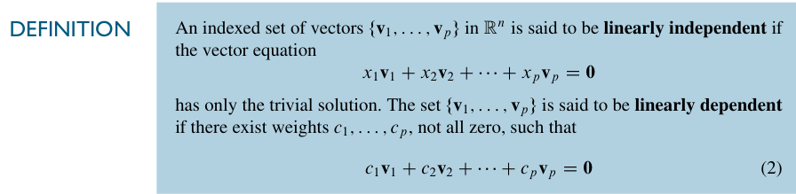
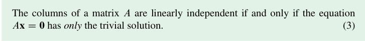
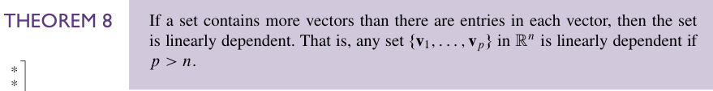
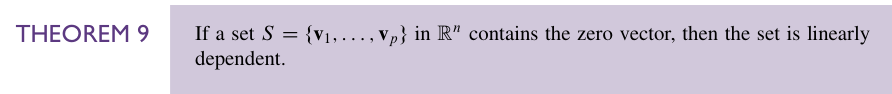

线性无关#
引入#
我们在 1.5 Solution Sets of Linear Systems 中学到的齐次线性方程组可以看作矢量方程，这样我们关注的重心就不再是方程的解，而是那几个矢量了。从这个角度出发，我们就会得到几个矢量 线性相关/线性无关 的定义：

其实稍微移项就会发现：
如果 m 个矢量线性无关，那么你不能线性组合其中的 n 个矢量（n<m）得到任何一个由剩下的 m-n 个矢量线性组合出的非零矢量。
同样显然的事实是课本上的这句话：

其实就是线性无关的定义。
对于两个矢量的线性无关，我们有这样一个简单的小结论： 只要有一个向量可以由另一个向量数乘得到，就是线性相关，否则线性无关。
这里的关键在于 零向量。不然是不用加粗的表述的
当然，你也可以从几何的角度来理解，那就是 共线 了
对于多个向量的线性相关/无关，我们这里也有一个判定：对于一个向量集合 S，当且仅当 至少一个 S 中的向量是其它向量的线性组合时，S 中的向量线性相关。也就是这里写的Theorem7

这里书上还特别给了一个 warning，指出在一个线性相关的集合中，并不是所有的向量都可以被表示成其它向量的线性组合。比如说 这道练习题 所展示的。
事实上，如果你验证 \(\mathbf{z}\) 是 \(\mathbf{u,v,w}\) 的线性组合，是没有问题的，得到的会是正确的结论。但是如果你验证 \(\mathbf{w}\) 是 \(\mathbf{u,v,z}\) 的线性组合就会得到它们线性无关的错误结论。原因是 列变换 。
具体地，你化简前者时是这样的：

化简后者时是这样的：
也就是 第三第四列交换了一下。
对于标准的检验，也就是用一个 增广矩阵 的形式，这样的交换不会出问题，因为不涉及最后一列。但是如果只是选择一个来验，这样的方法一定会出问题，因为这样的交换会让有解变成无解，无解变成有解。
Example4 是一个很简单的例子，但我们要这个例子推广出的结论，即：对任意在 \(ℝ^{3}\) 上的集合 \(\mathbf{u,v,w}\)，如果 \(\mathbf{u,v}\) 线性无关，那集合 \(\mathbf{u,v,w}\) 线性相关等价于 \(\mathbf{w}\) 在 \(\mathbf{u,v}\) 张成的平面上。

然后是两个定理，它们描述了一些特殊情况。在这些特殊情况下，这个向量集 自动地 线性相关。

即：向量数大于向量中元素的个数。
证明的核心是说明一定有自由变量。
这里甚至还特别给了一个 warning：这个定理不涉及任何 \(p\leq n\) 的情况。我寻思它确实没说啊，咋还要强调一下，大概是有人真的以为\(p\leq n\)就不能线性相关吧……

即：含有零向量。这显然吧……
习题：
线代习题选#1.7 42